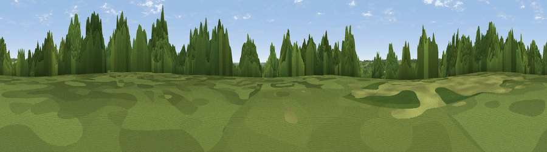

Viewpoint near Emery Down
#40995 in England · top 70% of its area beats it · near Emery DownThe view, rendered

A 360° render of this exact spot computed from the terrain model, tree cover and land cover — summer colours, afternoon light, calibrated against photographs of famous viewpoints. Real trees, hedges and buildings will differ in detail.
The panorama
Grey silhouette: terrain skyline in each direction (720 bearings, Earth curvature and refraction included). Dashed green: skyline with trees (+15 m) and buildings (+8 m) as obstacles. Blue strip: how far the ground is visible on each bearing.
Where the view opens
Wedge length = distance to the farthest visible ground on that bearing (vegetation-aware). Rings at 10, 25 and 50 km.
What fills the view
63% woodland · 35% grassland · 1% cropland ·
Angular shares of the visible panorama (visual magnitude), not map area. Landscape diversity 0.33 (0–1 Shannon).
Key numbers
More beautiful places nearby
The staircase of upgrades: each row has a higher view potential than everything closer. Driving times are estimates from straight-line distance, calibrated against real road routing — check an actual route before setting out.
| Place | Direction | Drive | Score |
|---|---|---|---|
| Viewpoint near Minstead | NE · 2 km | ~6 min | 32.2 |
| Viewpoint near Emery Down | ENE · 3 km | ~7 min | 35.0 |
| Viewpoint near Emery Down | E · 5 km | ~10 min | 44.9 |
| Viewpoint near Bramshaw | NNE · 8 km | ~16 min | 46.6 |
| Viewpoint near Hurn | SW · 16 km | ~28 min | 53.7 |
| Viewpoint near West Grimstead | NNW · 16 km | ~29 min | 62.7 |
| Viewpoint near Martin | WNW · 22 km | ~37 min | 64.6 |
| Viewpoint near Cranborne | WNW · 22 km | ~37 min | 65.0 |
50.87256, -1.65282 · source: screening · position refined by local search. Computed location — check access rights before visiting.